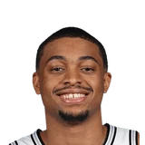
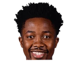

“We probably never saw a player like him so far. He's probably gonna be the No. 1 pick and will be coached by one of the best coaches ever, Gregg Popovich. He's gonna play a lot of minutes for a great organization like the Spurs. I definitely have high expectations for him, but I believe he's gonna be in a perfect position to develop and show that he can be one of the best players,”
What NBA players and coaches have said about Gregg Popovich
77 quotes about Gregg Popovich from 57 players, coaches and executives, newest first. Each one links to its original source.
Best quotes
Leonard said of him seeking second opinions.
“I don't feel like nothing was friction. I talk to Pop (Spurs coach Gregg Popovich) every day. He knows what the progression were. He knew what I was doing the whole entire time, as well as the front office. We made a group decision, so it was me just going out and saying, 'I am going to go out and do this thing.'”
Manu Ginobili:
“I know that TD [Tim Duncan] and Pop [Gregg Popovich] are not going to be on Twitter, so I never even insisted. Butfor example with some Argentinian guys like [Luis] Scola, [Andres] Nocioni and even [Fabricio] Oberto I tried to push it because I knew they were going to enjoy it, so I kind of convinced them, but I had no shot with TD and Pop.”
What Gregg Popovich has said about other players and coaches →
Quotes per season
Who talks about Gregg Popovich most
 Steve Kerr on Gregg Popovich6 quotes
Steve Kerr on Gregg Popovich6 quotes LaMarcus Aldridge on Gregg Popovich3 quotes
LaMarcus Aldridge on Gregg Popovich3 quotes- Michael Malone on Gregg Popovich3 quotes
- Stephen Jackson on Gregg Popovich3 quotes
 Doc Rivers on Gregg Popovich2 quotes
Doc Rivers on Gregg Popovich2 quotes Dwane Casey on Gregg Popovich2 quotes
Dwane Casey on Gregg Popovich2 quotes Ettore Messina on Gregg Popovich2 quotes
Ettore Messina on Gregg Popovich2 quotes Jerry Colangelo on Gregg Popovich2 quotes
Jerry Colangelo on Gregg Popovich2 quotes Kawhi Leonard on Gregg Popovich2 quotes
Kawhi Leonard on Gregg Popovich2 quotes Kevin Durant on Gregg Popovich2 quotes
Kevin Durant on Gregg Popovich2 quotes Manu Ginobili on Gregg Popovich2 quotes
Manu Ginobili on Gregg Popovich2 quotes Monty Williams on Gregg Popovich2 quotes
Monty Williams on Gregg Popovich2 quotes
Back and forth
- Gregg Popovich and Kawhi Leonard15 quotes
 Gregg Popovich and Tony Parker11 quotes
Gregg Popovich and Tony Parker11 quotes- Gregg Popovich and Steve Kerr11 quotes
- Gregg Popovich and LaMarcus Aldridge10 quotes
 Gregg Popovich and Victor Wembanyama9 quotes
Gregg Popovich and Victor Wembanyama9 quotes Gregg Popovich and Derrick White9 quotes
Gregg Popovich and Derrick White9 quotes- Gregg Popovich and Manu Ginobili8 quotes
 Gregg Popovich and Dejounte Murray8 quotes
Gregg Popovich and Dejounte Murray8 quotes Gregg Popovich and DeMar DeRozan8 quotes
Gregg Popovich and DeMar DeRozan8 quotes
Gregg Popovich and Keldon Johnson7 quotes Gregg Popovich and Jonathon Simmons6 quotes
Gregg Popovich and Jonathon Simmons6 quotes- Gregg Popovich and Kevin Durant5 quotes
2025-26
5 quotesTom Orsborn:Stephon Castle on Gregg Popovich speaking to team before it left for NYC:
“Pretty much his message was just let the last two games go. It happened. They were very winnable games. We feel like we gave them those games. We got to let those go and focus on the next one.”
“You know,Steve Kerr, Gregg Popovich — they were guys that went deep into their bench, and they both always used to say, ‘It's not about now, it's about the postseason,’”
De'Aaron Fox:
“We lost Game 3... but that was the first time he [Gregg Popovich] walked into the locker room and was like”
Keldon Johnson on the impact Gregg Popovich's has had on him:
“Pop believed in me. He believed in me when I was young, and when I didn't necessarily believe in myself ...”
RC Buford on Gregg Popovich:
“He’s incredibly disciplined—one of the most disciplined people I’ve ever met. He comes into the gym five days a week, does his rehabilitation, and continues to get better. The most emotional part of his journey now is that Tim has been in the gym with him every day. When Manu, Tony, or Boris come in from out of town, they’re there with him every day as well. It’s incredible to see the love and respect they have for each other. None of those guys have to be there, and Pop would still be there whether they were or not. To me, that shows we have a different kind of relationship and emotional connection within our organization, because I don’t think there are many teams where you would see that.”
2024-25
5 quotes“I knew how smart he was and how well-prepared for the job he was just from being with (Gregg Popovich) and R.C. (Buford) and learning the ropes from them. I was a young GM. I’m put in this position that I have to make this deal. Business is business. We ended up giving up two unprotected firsts.”
Hardy on Popovich's influence:
“I learned an incredible amount from Pop. I think he really set the foundation of values for me that you carry into your team. I also recognize that I'm not Pop, our personalities are not the same, and so I'm not trying to emulate Pop.”
Kawhi Leonard on Gregg Popovich:
“He had a phenomenal career. He coached until he pretty much couldn't. It shows how much dedication he had to the game, how much he loved the game, and how much he gave the game. I appreciate everything he's done for me.”
Marco Belinelli:
“In San Antonio, I found the perfect situation with Gregg Popovich, with a European-style team. They had just lost the NBA Finals to Miami — the famous Ray Allen corner shot. On the first day of training camp, they made us sit and watch the last two quarters where they lost the title. Pop said: 'This is where we start from. We have to build from here and never make those mistakes again.' That was my moment to fully commit.”
“I no longer wanted to just sit on the second assistant bench. The first ‘Spurs’ bench assistants all have four-year contracts, so I had no chance to advance. We talked about this with Pop [Gregg Popovich], and he said it would be better for me to change something, as there would be no room to advance with this team. We decided together that I would leave.”
Darius Songaila on Gregg PopovichFoxSanAntonio.com
2023-24
5 quotes“You want to slam dunk, and this and that, but a bunch of little things always work. The simple play always is the right play. That’s something I took from (Popovich), and it’s been great for my career.”
Monty Williams on Gregg Popovich:
“When I first met him in the ‘90s, I think I was too young to understand that kind of relationship could manifest in the NBA.”
Tom Orsborn:Mamadi Diakite on getting to play for Gregg Popovich:
“When I first met him, my impression was a big, ‘Whoa.’ I was starstruck because I've watched him since the beginning before I started playing basketball. So, getting to meet him and greet him and play for him is a great accomplishment.”

Mamadi Diakite on Gregg PopovichTwitter @tom_orsbornMalone on Wemby:
“You see what he is doing now and you can just envision that with the great coaching he is getting with Gregg Popovich that his learning curve is going to be swift and he is only going to get better and better as he gets stronger and understands the NBA game.”
“I'm confident that when I get the chance to get coached by Coach Popovich, he doesn't lie to his players. He tells the truth. Sometimes it's harsh, it's hard, but this is what I want.”
2022-23
5 quotes“We probably never saw a player like him so far. He's probably gonna be the No. 1 pick and will be coached by one of the best coaches ever, Gregg Popovich. He's gonna play a lot of minutes for a great organization like the Spurs. I definitely have high expectations for him, but I believe he's gonna be in a perfect position to develop and show that he can be one of the best players,”
Talking with Yann Ohnona from L'Equipe, Metropolitans 92 head coachVincent Collet, who coaches Victor Wembanyama both in the club and in the French national team, welcomed the draft lottery's result.
“It was the choice I was hoping for. San Antonio is a franchise that has built its legend with foreign players. We saw that in France with the prism of Tony Parker but there was also Manu Ginobili and others. I think Gregg Popovich can be the best mentor for him,”
“But you know, I do wish you see this at the NBA, you see at the NFL, these incredibly rich athletes who hypocritically disdain their fans and customers and who lecture them almost inevitably from a point of ignorance. So,Gregg Popovich is telling you that ‘It's a myth that the Second Amendment protects your rights. It's a myth that the Second Amendment protects your freedoms,’”
Ted Cruz on Gregg PopovichFOXnews.com
Jacque Vaughn on Gregg Popovich:
“I’m in this position because of him. He saw something in me… A very important person in my life and I wud it be here without him.”
Christos Tsaltas:Dejounte Murray on Gregg Popovich:
“I learned a lot. He's like a father of mines. We built great relationship. He told me a lot. He check in up on me. I love him and is a relationship that last forever”
2021-22
5 quotes“But what they wanted and what the Lakers may have wanted may not have — it never got to that point. As you know, Gregg Popovich doesn’t like the Lakers. I don’t think he was going to make it easy. But I do think San Antonio would have done business.”
Suns coachMonty Williams on Erik Spoelstra,
“They arguably have the best coach in the league, him, Steve [Kerr], Pop [Gregg Popovich].”
Harrison Wind:Michael Malone on Gregg Popovich who helped him land a job with the Cavs in 05:
“He said to me once 'Malone I have no idea why I help keep getting you jobs because you've never helped me win a damn game...me, my wife, my girls, we have a little shrine for Coach Pop in the house.”
“And Pop (Gregg Popovich) standing up there is always nice to see. But we came in here expecting to win the game,and that’s what we did.”
“At the end of the day, I want to make news because I’m hired for my qualifications. It was the original intent of Gregg Popovich when he hired me in 2014 — which is: ‘She added something to the group. She adds something to our team. I admire her mind and the way she looks at the game.’”
2020-21
4 quotesHarrison Wind:Malone on Gregg Popovich:
“This game is constantly changing and evolving and Pop has been on the forefront of changing. He's helped change the game. A few years ago the Beautiful Game... The ball movement. The player movement. So many teams included us have tried to emulate that.”
Connor Letourneau:Steve Kerr on Gregg Popovich:
“I don't think I ever would've felt comfortable speaking out until Pop's example. He gave me and a lot of people the courage to speak out when we felt comfortable.”
“When I first got to the NBA, Coach Pop [Gregg Popovich] told me one thing that always stuck with me, is how do you put your whole fingerprints on the world and leave your mark. Sometimes you have to stand up for what’s right, and sometimes that may be ruffling feathers and may be frowned upon by everyone else, but at the end of the day in your heart, knowing you’re on the right side of history and knowing that you did the right thing, good or bad, you have to live with that.”
When asked if the hotline could be a problem, Clippers coach Doc Rivers instead made light of it before saying he also understands the reasoning that the hotline is in place.
“I turned in LeBron [James] yesterday. I'm turning in Pop [Spurs coach Gregg Popovich] today. I'm trying to turn all these guys in,”
2019-20
8 quotes“It starts with policy and it starts with our owners and players and a guy like (San Antonio Spurs coach) Gregg Popovich and (Golden State Warriors coach) Steve Kerr speaking out,”
#Pistons coachDwane Casey on change:
“It starts with policy; it starts with our owners and players and guys like Gregg Popovich and Steve Kerr speaking out. If I say it, I’m just an angry Black man. We’ve got to get the majority to buy in and fight and help change policy.”
“T-Lue and Gregg Popovich are the two best X’s and O’s coaches that I’ve played for in my entire basketball career. From high school all the way up until I retired.”
San Antonio would win 129-114 over Boston, but Stevens continued to send his deepest apologies to Gregg Popovich and the Spurs for what they experienced.
“I told Pop (Gregg Popovich) after the game I’m really sorry that they had to experience that,”
Trump told reporters on Wednesday.
“He couldn’t answer the question. He was shaking like, ‘Oh, I don’t know.’ He didn’t know how to answer the question. Yet, he’ll talk about the United States very badly. I watched Popovich do sort of the same thing. But he didn’t look quite as scared, actually.”
Leonsis also reached out to Popovich.
“I talked to Gregg Popovich for 90 minutes. Not about the job. About, ‘Tell me what you’re seeing in the league, tell me about the candidates that I’m talking to, tell me about how you built excellence in your team without breaching any confidence,’”
“It’s amazing. I was lucky enough to play for [Popovich] on the Select Team two years ago and you see a different side of Pop than [during the NBA season],”
“I have a good relationship with those guys and I have so much respect for (head coach) Pop (Gregg Popovich), (general manager) RC (Buford) and (assistant GM) Brian Wright,”
2018-19
6 quotesSpeaking about his decision to spend time in the NBA, Messina added:
“When I decided to be the assistant of coach Popovich I did it because at that moment I wanted to work with certain people, and for a great organization. Then staying there feeds the idea, that I could be the heir, or coach there anyway. I got close to it, it would have made me very happy. ButI want to eliminate narratives like “it was a bad experience and has returned to Europe”
“I probably learned the most about basketball in my brief moment with [San Antonio Spurs] Coach [Gregg] Popovich, just because every day he’s like a teacher... and finds a way to spin life and basketball into one,”
“Thabo (Sefolosha) talked about his time in Italy, and everybody black and white has a story, but our country, like Pop (San Antonio coach Gregg Popovich) said, we have to talk about our national sin. People may say, 'Hey, whatever, what the fan said was a small thing.' Well, it's not. What it does is make everyone feel small, and every Caucasian should take a look at themselves and look at their heart.”
Steve Kerr on Gregg Popovich’s future:
“I don’t get the sense he’s anywhere close to stepping down. But then again, I haven’t asked him.”
For Bertans, being a part of that defensive effort gave him more pleasure than his sharpshooting.
“One of the first things (Popovich) ever told me was that I can play in the NBA with offense, but I am going to play on this team with defense,”
“In terms of my role on the team, Coach Popovich and I did not have the same vision,”
2017-18
7 quotesLonnie Walker on what he can contribute to #Spurs:
“If Coach Popovich needs me to dive on the floor strictly, then I'll strictly dive on the floor. I'm going to do whatever it takes for us to get that win sooner than later, hopefully receive that championship.”
Danny Green:
“I’m taking some time. I don’t know what the decision is going to be. It depends on the feedback I get from my agent and what I get back from the organization. I think they are taking some time as well to take a breath because so much has gone with the organization outside of the players with Pop (Gregg Popovich) and the draft stuff is going on. There is a lot to be processed and taken into account on both sides. Not just the player’s side but the organizational side.”
As Aldridge remembers, his revamped attitude and approach to the game in October — as opposed to the meeting — truly put Popovich back in his corner.
“The talk (with Popovich) was cool, but when I got back, and he saw how much work that I put in — camp time — that’s when he saw how much work that I put in to being ready to lead guys, and I came in with a different mindset,”
Connor Letourneau:Kerr on Popovich:
“Removing the sarcasm, I want Pop to win against anyone else. We’re that close. He’s my mentor.”
Leonard said of him seeking second opinions.
“I don't feel like nothing was friction. I talk to Pop (Spurs coach Gregg Popovich) every day. He knows what the progression were. He knew what I was doing the whole entire time, as well as the front office. We made a group decision, so it was me just going out and saying, 'I am going to go out and do this thing.'”
One of the things that was intriguing to Lowry, besides the Spurs' history of winning, was the head coach.
“Gregg Popovich is one of the best coaches in the history of the NBA,”
Jeff McDonald:Simmons, on his conversations with Popovich:
“Pop is always trying to help me and give me knowledge and make sure I take care of my money.”
2016-17
5 quotes“To even imply that the officials ref the Spurs differently, or Kawhi differently, is not a good place to go. I don’t know what he intended, but if he is implying the officials are not being fair because it’s Kawhi vs. Zach [Randolph] or David Fizdale vs. Gregg Popovich, that’s not something you want to be even hinting at.”
“There's probably a couple guys you can make a strong case for. Erik Spoelstra's done an amazing job. Pop (Spurs coach Gregg Popovich,) you just give it to Pop every year. I think Mike has been brilliant. You look at where the team is now compared to where they were at the end of last season.”
expanded Jackson on his talk with Pop.
“That's when I got waived right before the playoffs in San Antonio. He [Popovich] asked me to do it and I told him I could not do it.”
Aldridge said he is not buying into the rumor, citing he is happy in San Antonio, likes he is part of the on-the-court leadership with Kawhi Leonard, and is enjoying the winning culture.
“I didn't buy into it. I haven't heard anything about it. I talked to Pop (head coach Gregg Popovich) daily and he's always telling me that I'm doing great,”
Sirius XM NBA:Jerry Colangelo:
“There will be alot of different players representing the United States in 17-18 & believes Gregg Popovich is ready for it”
2015-16
7 quotesCraig Sager:
“People always come up to me and say ‘God, that Popovich is a jerk.’ And I say ‘no he’s not.’If I was him I wouldn’t want me coming into the middle of a huddle in a playoff game in the middle of the third and fourth quarter. You’re trying to make adjustments, you’re trying to win games, you’re trying to tell your assistant coaches what rotations to have and who’s gonna come in and do what. You’ve gotta stop and talk some reporter on the sideline? So I understand, but those are the (NBA) rules. As long as those are the rules, I’m going to keep approaching him at the end of the third quarter at home.”
Metta World Peace:
“The triangle [offense] is hard. It’s not easy. But there’s things you can implement. Everybody does that. Golden State and San Antonio does that. Golden State has Steve Kerr and they run a little bit of triangle. The Spurs run a little bit. [Gregg] Popovich reminds me of Phil and [Rick] Carlisle. He dictates a lot [of plays], but then he lets you go. Carlisle has his own style. Popovich has his own style. But he reminds me of Phil and Carlisle together.”
Dwain Price:Carlisle on Popovich:
“Pop’s the master. His accomplishments and everything he’s done is beyond the realm of even great. It’s beyond that.”
TNT analystKenny Smith said he is convinced Aldridge will adjust and the Spurs will emerge as the best team in the West.
“I have faith in Gregg Popovich understanding the adjustment [Aldridge will go through],”
Kenny Smith on Gregg PopovichBoston Globe
Jabari Young:Colangelo:
“I had a short list and it started and ended with (Popovich).”
Erik Horne:Durant on Popovich as next USA Basketball coach:
“I'm a huge fan of Coach Pop, he's well-respected, and he definitely deserves it.”
“If they saying that, they aren't the champs. It's simple. Gregg Popovich didn't say that. That's one organization I really respect. And you haven't heard anybody in they camp say that. You ain't heard anybody from OKC say that, some of the organizations that I really respect,”
2014-15
2 quotesMark Berman:Josh Smith on Popovich's strategy 2foul him:
“He's a great coach. He knows how 2disrupt the rhythm of the game but we still had an opp to win”
Ohm Youngmisuk:Fisher on his relationship with Popovich:
“We have a very strange relationship because we have literally cost each other a lot... A lot has been at stake when we played. Last night was probably the least meaningful game we've ever played against each other”
2013-14
9 quotes“It’s been built to fit the strengths of our teams. [Popovich and I] grew up under Coach Brown, and Larry thinks there’s a wino on the street with a perfect out-of-bounds play. He’ll listen to anybody. And I think we grew up under that burden.”
Hill has lived in San Antonio for the past 11 years and has spent several years coaching in China, Taiwan, and Japan.
“It’s part of life — [Popovich] always wanted to be the head coach, I just didn’t recognize it quick enough,”
Bob Hill on Gregg PopovichBoston Globe
on Friday and reasoned the Spurs could have made a tactical move in regard to the AC based on what the veteran point guard has seen them do in the past.
“You know what, Pop [Spurs coach Gregg Popovich] has done that so many times. I don't know if it's a conspiracy, but I'm telling you, going into San Antonio is a tough place to play,”
Kerry Eggers:'@LaMarcus Aldridge on Gregg Popovich:
“He has done great job of getting them to understand level of play in postseason has to be 10 times better”
Manu Ginobili on the odds of Gregg Popovich joining Twitter:
“I don't even think there's a one in a million chances of Pop signing up on Twitter. No way. It's not gonna happen. Even if somebody made it for him. No, it's not his thing, he wouldn't say anything. He's private in that regard... So no, it's not gonna happen.”
Manu Ginobili:
“I know that TD [Tim Duncan] and Pop [Gregg Popovich] are not going to be on Twitter, so I never even insisted. Butfor example with some Argentinian guys like [Luis] Scola, [Andres] Nocioni and even [Fabricio] Oberto I tried to push it because I knew they were going to enjoy it, so I kind of convinced them, but I had no shot with TD and Pop.”
Anthony Slater:Kevin Durant on the Spurs consistent system:
“If Popovich started at point guard, I'm sure he'd find a way to get 10 assists.”
Mirza Teletovic:
“Superb. Garnett is a winner, a fighter, he is 38 years old and he just works, works – as he has just from the beginning. Williams, if he has no injuries, is the best point guard in the NBA. Pierce ...a relaxed guy, everything is easy, slow, he says that's most important when you play one on one. He uses instinct perfectly, analyzes things. A real professional. Jason Kidd will be one of the best coaches, for sure – the new Gregg Popovich.”
Mirza Teletovic on Jason Kidd, Gregg PopovichNetsDaily
Jackson signed with the Clippers earlier this week, joining a team for the first time since being waived by the Spurs on April 27th.
“We needed to get someone. I wanted a veteran. I know [San Antonio coach Gregg Popovich] well and I know what went on there, so we're hoping to give him another shot at it,”
2012-13
3 quotesStephen Jackson:
“To me, (Gregg Popovich) only cares about three guys, and the rest of the guys just fit in wherever you can.”
Ettore Messina said that CSKA Moscow and San Antonio Spurs are trying to organiza an exhibition game in Texas next fall.
“Manu Ginobili was one of my players with Kinder and I am still in contact with him. Then there is coach Gregg Popovich, whom I consider a friend”
“I shut it down for two months and I was shocked when I got a phone call from (Spurs coach Gregg Popovich),”
2011-12
1 quoteVeteran Stephen Jackson said they deserved the high-decibel tirade from the coach.
“I don't think Gregg Popovich should have to come in this locker room and scream and kick to get guys to go in and play hard,”